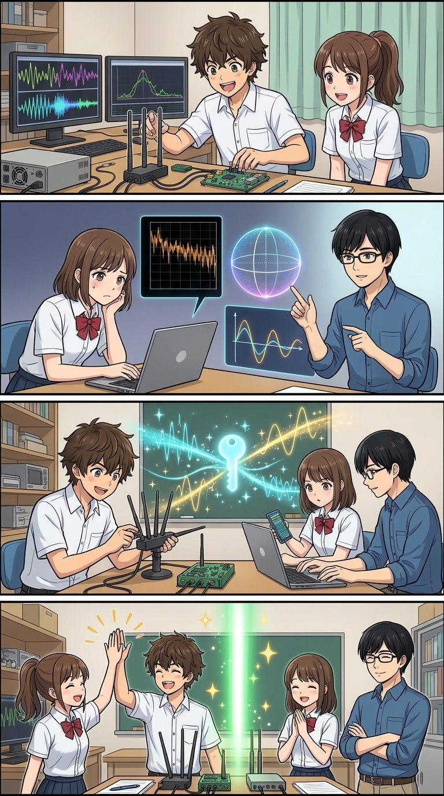
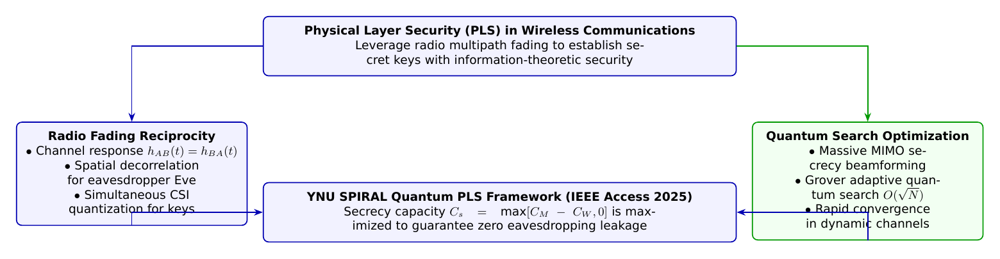

🎨 4コマ漫画挿絵（文字なし）
AI高解像度生成
▲ 【挿絵】青葉台高校 情報科学部＆帝都科学大学サイバーディフェンス・ラボでの実践シーン
💬 4コマ漫画キャラクターセリフ (Story Dialogue Script)
日・英バイリンガル (JA / EN)[悠真]「それなら、無線電波そのものの『揺らぎ（フェージング）』を秘密鍵の材料にすればいいんだ！」
[Yuma] "Then why not harvest the physical 'fading' of radio waves themselves as entropy for secret keys!?"
[葵]「自然界の物理現象そのものが、絶対破られないワンタイムパッドの鍵になってくれるんだ！」
[Aoi] "Mother nature's physical phenomenon itself becomes an unbreakable one-time pad key!"
[蓮]「量子計算が暗号を破る敵ではなく、物理層の盾を極限まで強化する味方になるんだね！」
[Ren] "Quantum computing isn't just an encryption breaker; it becomes our greatest ally to harden physical shields!"
[全員]「物理現象と数理の調和こそ、私たちが目指す真のセキュリティの地平だ！」
[All] "The harmony of physical reality and pure mathematics is the true horizon of cybersecurity!"
📖 小説本文
冬晴れの澄み渡る空の下、青葉台高校の屋上。冷たい風の中、神崎蓮は銀色に輝くロッドアンテナと、手のひらサイズのSDR（Software Defined Radio: ソフトウェア無線）受信機を三脚に固定していた。
手元のノートPCには、2.4GHz帯と5GHz帯の電波強度がウォーターフォール表示でリアルタイムに描かれている。
「……やっぱり、Wi-FiもBluetoothも、電波である以上は誰にでも届いちゃうんだよね」蓮が息を白く吐きながら呟いた。「いくらWPA3やAES暗号を使っていても、電波そのものは盗聴者のアンテナにも飛び込んでくる。暗号鍵の交換プロトコルに万が一の脆弱性があったら、すべて傍受されてしまうんじゃないかって、無線を見てると時々怖くなるよ」
「そんな蓮くんに、とっておきの科学の魔法を教えてあげよう」
階段を上がってきた城崎悠真が、あたたかい缶ココアを蓮に手渡しながら笑った。後ろには、マフラーを巻いた橘葵と白石結衣も続いている。
「魔法……？ 悠真先輩、電波を特定の人間以外に届かなくするステルス電波なんて作れるんですか？」
「電波を消すんじゃない」悠真は屋上のフェンスに寄りかかり、広がる横浜の街並みを指差した。「**『電波が届いていても、盗聴者には絶対に解読できない情報理論的安全性（Information-Theoretic Security）』**を、暗号ソフトウェアではなく電波そのものの物理特性で実現するんだ。それが**『物理層セキュリティ（Physical Layer Security: PLS）』**だよ」
「物理層セキュリティ……！」結衣の目が輝いた。「シャノン（Claude Shannon）の完全秘匿性理論や、ワイヤータップ・チャネル（Wyner's Wiretap Channel）のモデルですね！」
「さすが結衣ちゃん、話が早い」悠真がポケットから取り出したタブレットに、横浜国立大学SPIRALの最新論文を表示した。 「横浜国大SPIRALの松嶺大地さん、落合秀樹教授、そして四方順司教授がIEEE Access 2025に発表した世界的快挙――**『Quantum Algorithms for Physical Layer Security in Wireless Communication（無線通信における物理層セキュリティのための量子探索アルゴリズム）』**だ」
---
📊 セキュリティ構造図解 (TikZ LuaLaTeX生成)
国家安全基準・工学図解
▲ 【技術構造図】IPAデジタルスキル標準・国際規格に準拠した仕組みのモデル化